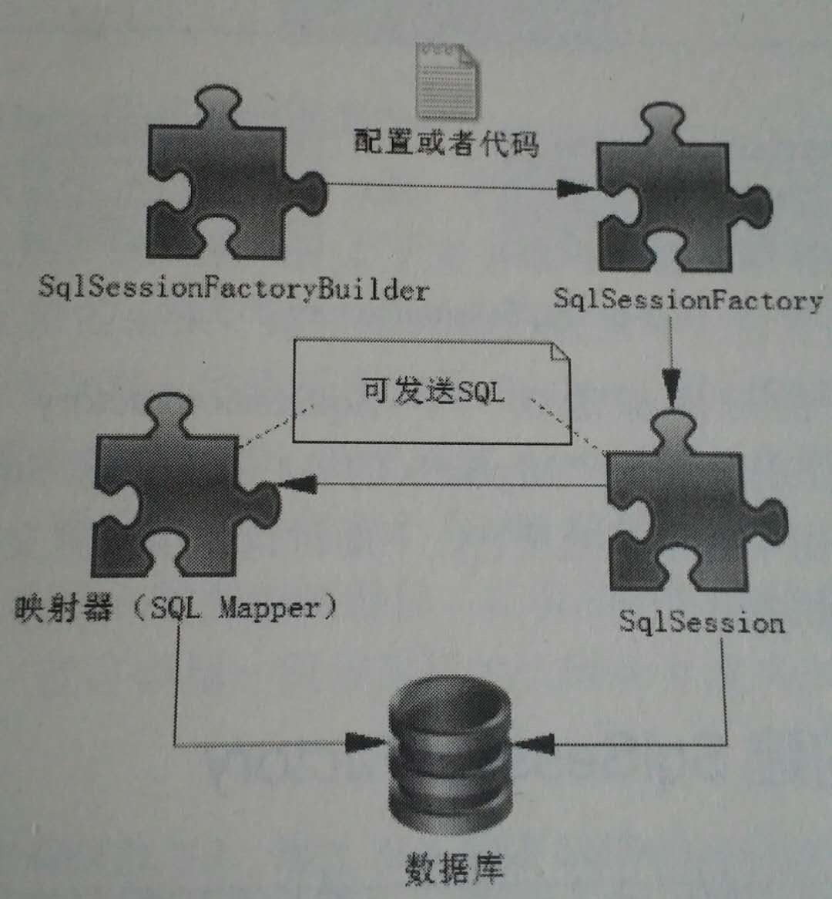

Mybatis是互联网持久框架，所谓的持久层就是指可以将业务数据存储到磁盘上，具备长期的存储能力，只要磁盘不损坏，在断电或者其他情况下，重新开启系统仍然可以获取这些数据。
但是它也存在缺点，就是相对于内存而言，速度慢。如果要实现秒杀，或者抢红包等对速度要求很高的功能，就要考虑使用Redis，这个还有待学习。
Mybatis的核心组件有4个，分别是：
- SqlSessionFactoryBuilder（构造器）
- SqlSessionFactory（工厂接口）
- SqlSession（会话）：既可以发送SQL执行的返回结果，也可以获得Mapper接口。
- SQL Mapper（映射器）：由一个接口和XML文件构成，它负责发送SQL去执行，并返回结果。

SqlSessionFactory
使用Mybatis的第一件事情就是要使用配置或代码生成SqlSessionFactory（用配置方式比较容易修改），而Mybatis提供了构造器SqlSessionFactoryBuilder。
使用XML构建SqlSessionFactory
Mybatis中的配置文件分为两类：基础配置文件和映射文件。基础配置文件通常只有一个，用来配置一些最基本的上下文参数和运行环境。映射文件用来配置映射关系、SQL、参数等。
基础配置文件（mybatis-config.xml）：
1 | ... |
通过XML构建SqlSessionFactory：
1 | SqlSessionFactory SqlSessionFactory = null; |
首先读取mybatis-config.xml，然后通过SqlSessionFactoryBuilder()创建SqlSessionFactory。SqlSessionFactory的唯一作用就是生产Mybatis的核心接口对象SqlSession，我们往往采用单例模式处理它。
SqlSessionFactory的生命周期存在于整个Mybatis应用中，一旦创建就要长期保存它，直到不再使用Mybatis应用。
SqlSession
SqlSession的作用类似于JDBC中的Connection对象，代表着一个连接资源的启用，它具体的3个作用如下：
- 获取Mapper接口
- 发送SQL到数据库
- 控制数据库事务
SqlSession发送SQL
1 | Role role = (Role)sqlSession.selectOne("getRole",1L); |
其中selectOne()方法代表使用查询并且只返回一个对象。“getRole”是映射器中配置的SQL语句的id，1L即1个Long类型的参数，代表返回对象的类型。
用Mapper接口发送SQL
SqlSession也可以获取Mapper接口，通过Mapper接口发送SQL。
1 | RoleMapper roleMapper = sqlSession.getMapper(RoleMapper.class); |
以上两种发送SQL的方式，建议使用后者。
如果说SqlSessionFactory相当于数据库的连接池，那么SqlSession就相当于一个数据库连接，它的生命周期应该是一个业务请求中，处理完整个请求后，应关闭这条连接让它归还给SqlSessionFactory。
映射器
映射器由一个接口和对应的XML 文件组成，它可以配置以下内容：
- 描述映射规则
- 提供SQL语句，配置SQL参数类型、返回类型、缓存刷新等
- 配置缓存
- 提供动态SQL
映射器的主要作用就是将SQL查询到的结果映射为一个POJO，或者将POJO 插入到数据库中，并定义一些关于缓存的内容。
映射器接口
1 | public interface RoleMapper{ |
用XML方式创建映射器
1 | ... |
Mybatis在默认情况下提供自动映射，只要SQL返回的列名能和POJO 对应起来即可。
Mapper是一个接口，由SqlSession创建，所以它的生命周期应该小于等于SqlSession的生命周期。